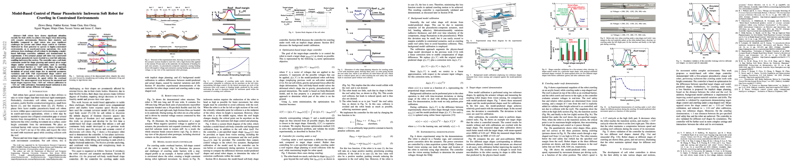

2022 IEEE 5th International Conference on Soft Robotics (RoboSoft)
Abstract. Soft robots have drawn significant attention recently for their ability to achieve rich shapes when interacting with complex environments. However, their elasticity and flexibility compared to rigid robots also pose significant challenges for precise and robust shape control in real-time. Motivated by their potential to operate in highly-constrained environments, as in search-and-rescue operations, this work addresses these challenges of soft-robots by developing a model-based full-shape controller, validated and demonstrated by experiments. A five-actuator planar soft robot was constructed with planar piezoelectric layers bonded to a steel foil substrate, enabling inchworm-like motion. The controller uses a soft-body continuous model for shape planning and control, given target shapes and/or environmental constraints, such as crawling under overhead barriers or "roof" safety lines. An approach to background model calibrations is developed to address deviations of actual robot shape due to material parameter variations and drift. Full experimental shape control and optimal movement under a roof safety line are demonstrated, where the robot maximizes its speed within the overhead constraint. The mean-squared error between the measured and target shapes improves from ~0.05 cm2 without calibration to ~0.01 cm2 with calibration. Simulation-based validation is also performed with various different roof shapes.
Inchworm soft robot motion mechanism
Crawling under overhead constraints
Experimental setup
Experimental demo of crawling under a step-shaped roof
Simulation demo for a slanted roof
Simulation demo for a sinusoidal roof
Paper
Latest version (Mar 29, 2022): arXiv:2203.15198 [cs.RO].
To appear at the 2022 IEEE 5th International Conference on Soft Robotics (RoboSoft)

Poster

Bibtex
doi = {10.48550/ARXIV.2203.15198},
url ={https://arxiv.org/abs/2203.15198},
author = {Zheng, Zhiwu and Kumar, Prakhar and Chen, Yenan and Cheng, Hsin and Wagner, Sigurd and Chen, Minjie and Verma, Naveen and Sturm, James C.},
keywords = {Robotics (cs.RO), Systems and Control (eess.SY), FOS: Computer and information sciences, FOS: Computer and information sciences, FOS: Electrical engineering, electronic engineering, information engineering, FOS: Electrical engineering, electronic engineering, information engineering},
title = {Model-Based Control of Planar Piezoelectric Inchworm Soft Robot for Crawling in Constrained Environments},
publisher = {arXiv},
year = {2022},
copyright = {arXiv.org perpetual, non-exclusive license}
}
Team


Prakhar Kumar

Yenan Chen

Hsin Cheng

Sigurd Wagner


Supplemental Video
Link to the video
Acknowledgements
This work was supported by the Semiconductor Research Corporation (SRC), DARPA, Princeton Program in Plasma Science and Technology, and Princeton University.